Portafolio de Evidencias
Selecciona un integrante en el menú superior para visualizar sus trabajos del trimestre.
Evidencias: Ana Maria Mejia
La sapa caramelo. 🐸
Act. 01Estaba la sapa caramelo sentada a la orilla del río cauca, en el peñasco más alto de la región, observando a sus amigos jugar, pensó en unirse a ellos pero no podía, debido a que estaba alejada de sus amigos busco una manera de acercarse pero tuvo un problema, como estaba haciendo mucho calor el moco que generaba su cuerpo le impedía moverse por qué estaba sobre una superficie rígida, observo como podría salir de esta situación para poder llegar a donde estaban sus amigos, luego se pensar un rato vio que cerca de ella había una estaca con la cual podría ayudarse apoyándose en ella, trato de alcanzarla y para lograrlo unió varias hilos haciendo un nudo para poder jalar y llegar hasta la estaca, luego de hacer esto pudo llegar hasta la estaca y pudo mover y avanzar, pero debido a que estaba haciendo mucho calor busco una manera de poder cubrirse y encontró una tapa para poder obstruir los rayos del sol, luego de esto pudo avanzar con facilidad y tuvo la esperanza de poder llegar donde sus amigos y compartir con ellos, pasó una tarde hermosa....
Taller de Comunicación Asertiva
Act 02Análisis del Video: Tipos de Comunicación
Referencia: https://shre.ink/DDwx
¿Cuáles son los tipos de comunicación que asumen los seres humanos en su interacción cotidiana?
R// Los tipos de comunicación que vemos en la vida cotidiana son tres: está la comunicación pasiva, la comunicación agresiva y la pasiva-agresiva como tercera.
Diferencias Fundamentales
¿Cuál es la diferencia entre comunicación agresiva y comunicación pasiva?
La comunicación pasiva: Es cuando las personas tienden a poner las necesidades de los demás antes que las suyas, evitando expresar sus propios sentimientos. Esto puede llevar a la acumulación de resentimientos o a la desvalorización personal.
La comunicación agresiva: Las personas expresan sus pensamientos y necesidades de una manera que invade o ignora los derechos y sentimientos ajenos. Esto se ve reflejado en comportamientos como interrumpir, los tonos de voces elevados o hacer exigencias.
Casos de la Vida Cotidiana
Ejemplo de comunicación pasiva-agresiva:
R// Una pareja acuerda dividir las tareas del hogar. A una de las personas le molesta que la otra no lave los platos. En lugar de decir directamente: “Me molesta que no estés lavando los platos. ¿Podemos organizarnos mejor?”, recurre a frases como:
- “No te preocupes, yo siempre lavo los platos… como siempre.”
- “Tranquilo, ya estoy acostumbrado a hacerlo todo.”
Este ejemplo es de comunicación pasiva-agresiva porque la persona, en lugar de hablar la situación y expresar sus sentimientos de forma clara y concisa, recurre a las indirectas evitando discutir el tema de frente.
Conclusión sobre Asertividad
¿Qué características tiene la comunicación asertiva?
R// La comunicación asertiva permite a las personas expresarse de manera honesta sin ser agresivas o sumisas. Esto fomenta el respeto y la comprensión en las interacciones, lo que lleva a relaciones más sanas tanto en el ámbito laboral como el personal y sentimental.
Análisis de Video Complementario
Referencia: https://www.youtube.com/watch?v=u4sQ9jwySz4


Funciones del lenguaje
Tema:Función Fatica
Act 03Presentación con diapositivas


EL PARALENGUAJE EN LA COMUNICACIÓN
Evidencia 041. Introducción
La comunicación humana es un proceso complejo que va más allá de las palabras. Aunque el lenguaje verbal es fundamental, existen elementos que lo complementan y le otorgan mayor significado. Entre estos elementos se encuentra el paralenguaje, el cual influye directamente en la forma en que se interpreta un mensaje.
El paralenguaje permite expresar emociones, actitudes e intenciones mediante características de la voz como el tono, el volumen o las pausas. En diferentes contextos, como la vida cotidiana o el cine, estos elementos son esenciales para comprender el verdadero sentido de la comunicación.
El presente trabajo tiene como objetivo analizar el concepto de paralenguaje, su importancia y su influencia en la interpretación de los mensajes.
2. Marco teórico
El paralenguaje forma parte de la comunicación no verbal y se refiere a los aspectos vocales que acompañan al habla. Según Knapp, Hall y Horgan (2014), la comunicación no verbal incluye todos aquellos elementos que transmiten información sin depender exclusivamente de las palabras, entre ellos las características de la voz.
Por su parte, Poyatos (1994) define el paralenguaje como el conjunto de cualidades de la voz que modifican o complementan el significado del lenguaje verbal, tales como la entonación, el ritmo, el volumen y las pausas. Estos elementos permiten que el receptor comprenda no solo lo que se dice, sino también la intención detrás del mensaje.
En el cine, el paralenguaje es una herramienta poderosa para construir personajes y transmitir emociones que las palabras por sí solas no logran expresar. A través de la voz, los actores logran que el espectador sienta alegría, miedo, tristeza o urgencia.
3. Análisis de escenas de la película "El Abuelo"
A continuación, se presentan dos escenas de la película "El Abuelo" donde el paralenguaje juega un papel fundamental en la transmisión de emociones.
Escena 1. El reencuentro
En esta escena, Ania y Tolia se encuentran después de estar separados. La intensidad emocional es alta y se refleja claramente en su forma de comunicarse.
Tolia: "¡Ania! ¡Ania! ¿Estás ahí?"
Ania: "¡Tolia! ¡Tolia!"
Justificación: En esta escena, lo más importante no es solo que se llamen por sus nombres, sino la intensidad de sus gritos y el tono de voz. El paralenguaje aquí refleja la urgencia, la emoción y la alegría del reencuentro. A través de los gritos desesperados y emocionados, se puede sentir el alivio de volverse a ver, como si Tolia buscara abrazarla con su voz. Esto demuestra cómo, incluso a la distancia, el paralenguaje puede transmitir afecto y protección de una forma muy profunda.
Escena 2. El deseo al pez dorado
Esta es una de las escenas finales de la película. Después de que Ania logra quedarse con su abuelo, viven un momento especial mientras pescan juntos. Allí, Ania expresa sus deseos a un pez dorado, en un instante lleno de emoción y esperanza.
Tolia: "Un pez dorado también cumple deseos".
Ania: "¿De verdad? ¿Cómo pudiste pescarlo?".
Tolia: "Diez, inténtalo... Vale, pero sujétalo fuerte porque se escapa".
Ania: "No la voy a soltar antes de tiempo. Vamos pececito... Pececito, haz que el abuelo no muera nunca, que Tolia se pueda casar y que mamá allí en el cielo esté bien. Entonces todos seremos felices".
Ania: "¿Quieres ir a casa? Pues ve, nada"
Justificación: En esta escena, lo más significativo no es solo lo que Ania dice, sino cómo lo dice. Su voz transmite una mezcla de ilusión, inocencia y tristeza. Habla con una intensidad emocional que refleja su deseo de que todo esté bien, especialmente cuando menciona a su mamá. Es posible percibir pequeñas pausas o cambios en su tono que revelan el dolor que aún lleva dentro. No se trata de una conversación común, sino de un momento muy íntimo donde su forma de hablar expresa más que cualquier palabra. El paralenguaje aquí permite entender sus sentimientos más profundos, mostrando su esperanza, pero también su miedo a perder a las personas que ama.
Evidencias: Jhoam Funez
La sapa caramelo🐸👒
Act. 01Estaba la Sapa caramelo sentada a la orilla del río Cauca en el peñasco más alto de la región contemplando la vista del hermoso paisaje cuando de repente, cerca de la hierba y el musgo húmedo alrededor, una serpiente la cual se escabullía lentamente sin que la Sapa se diera cuenta acercandose más y más hasta que por fin estaba tan cerca para agarrarla y convertirla en su cena cuando se abalanzó sobre ella se resbaló por el MOCO de la Sapa dijo la serpiente -Que asco por que te resbalas tanto ?,no te puedo agarrar Rápidamente la Sapa agarro una ESTACA que estaba cerca para tratar de defenderse de la serpiente, la serpiente aún así no se rindió e intento tomarla otra vez pero dado a que la Sapa era resbaladiza esquivo q la serpiente tanto que a la serpiente se le hizo un NUDO en la cola en eso la rana logra llegar cerca de una botella ala cual accidentalmente deja caer y le vuela la TAPA cayéndole a la serpiente y así sin ESPERANZA la serpiente acepto que no podría comerse a la Sapa resignado a no comer por hoy decidió marcharse para nunca más volver
Taller de Comunicación Asertiva
Act 02Análisis del Video: Tipos de Comunicación
Referencia: https://shre.ink/DDwx
¿Cuáles son los tipos de comunicación que asumen los seres humanos en su interacción cotidiana?
R// Los tipos de comunicación que vemos en la vida cotidiana son tres: está la comunicación pasiva, la comunicación agresiva y la pasiva-agresiva como tercera.
Diferencias Fundamentales
¿Cuál es la diferencia entre comunicación agresiva y comunicación pasiva?
La comunicación pasiva: Es cuando las personas tienden a poner las necesidades de los demás antes que las suyas, evitando expresar sus propios sentimientos. Esto puede llevar a la acumulación de resentimientos o a la desvalorización personal.
La comunicación agresiva: Las personas expresan sus pensamientos y necesidades de una manera que invade o ignora los derechos y sentimientos ajenos. Esto se ve reflejado en comportamientos como interrumpir, los tonos de voces elevados o hacer exigencias.
Casos de la Vida Cotidiana
Ejemplo de comunicación pasiva-agresiva:
R// Una pareja acuerda dividir las tareas del hogar. A una de las personas le molesta que la otra no lave los platos. En lugar de decir directamente: “Me molesta que no estés lavando los platos. ¿Podemos organizarnos mejor?”, recurre a frases como:
- “No te preocupes, yo siempre lavo los platos… como siempre.”
- “Tranquilo, ya estoy acostumbrado a hacerlo todo.”
Este ejemplo es de comunicación pasiva-agresiva porque la persona, en lugar de hablar la situación y expresar sus sentimientos de forma clara y concisa, recurre a las indirectas evitando discutir el tema de frente.
Conclusión sobre Asertividad
¿Qué características tiene la comunicación asertiva?
R// La comunicación asertiva permite a las personas expresarse de manera honesta sin ser agresivas o sumisas. Esto fomenta el respeto y la comprensión en las interacciones, lo que lleva a relaciones más sanas tanto en el ámbito laboral como el personal y sentimental.
Análisis de Video Complementario
Referencia: https://www.youtube.com/watch?v=u4sQ9jwySz4
Funciones del lenguaje
Tema:Función Poetica
Act 03Presentación con diapositivas

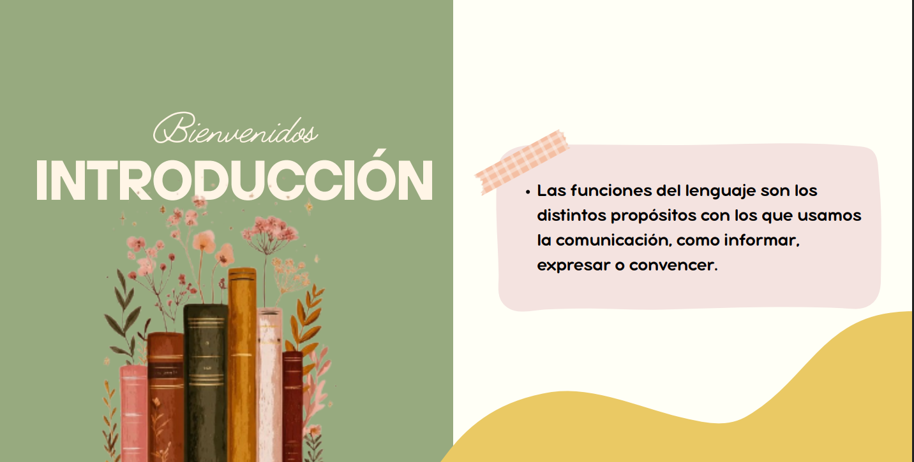
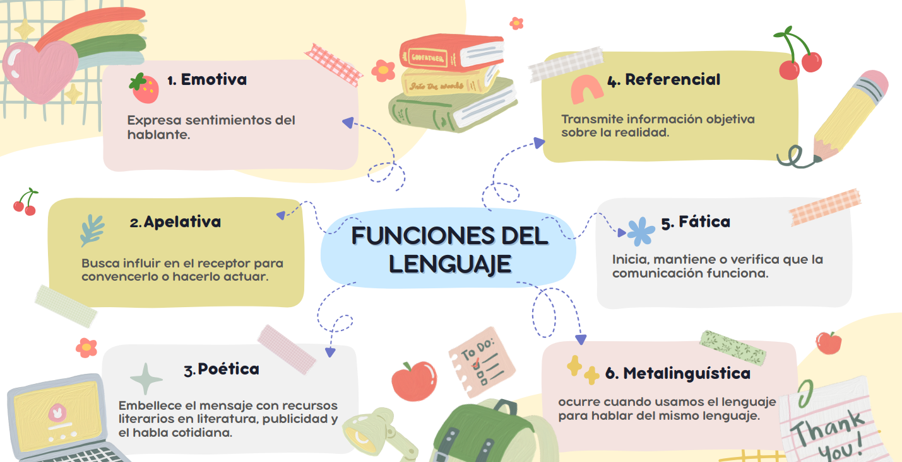
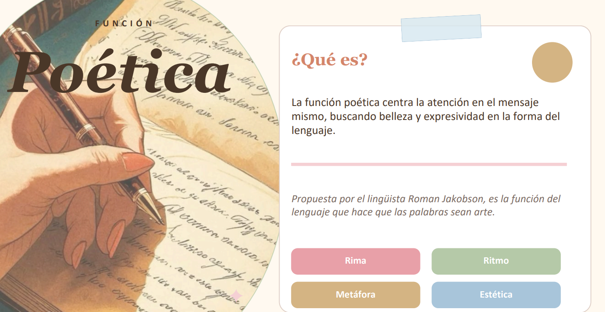
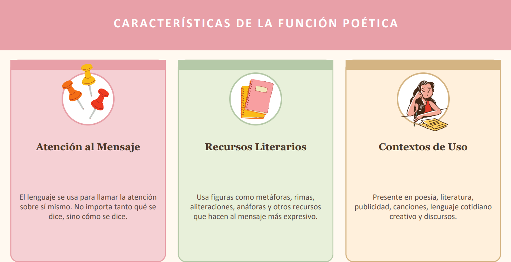
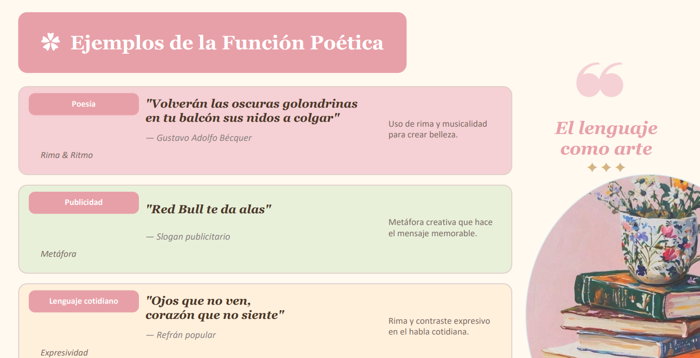
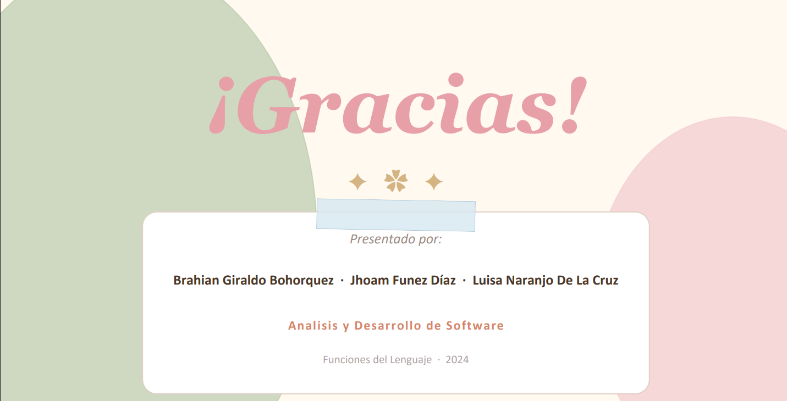
COMUNICACIÓN NO VERBAL DESDE EL ENTORNO SOCIAL
Act 41. ¿Qué es la comunicación no verbal?
La comunicación no verbal es el conjunto de señales, gestos y comportamientos que se transmiten sin el uso de palabras, y que complementan, refuerzan o, en algunos casos, contradicen lo que se dice verbalmente. Esta forma de comunicarse incluye elementos que, de manera consciente o inconsciente, revelan emociones, intenciones y estados de ánimo. (IAFI)
De acuerdo con investigaciones en el área, alrededor del 65% de lo expresado en una situación radica en el contenido no verbal, mientras que apenas el 35% consiste en lo que se dice con palabras. (Consol Vilar)
2. La vestimenta como signo no verbal
El vestido es considerado uno de los más formidables signos no lingüísticos de la comunicación no verbal (Barthes, 2003). Las piezas de ropa y complementos —líneas, formas, volúmenes, tejidos, calidad y colores— proyectan y transmiten información por quien las lleva, convirtiéndose en parte de su identidad. (SensaCine)
La moda se ha convertido en un lenguaje cuyo elemento básico es el signo. El vestido es una forma de manifestar el sexo, la edad, la clase social a la que se pertenece, la profesión, la personalidad, la procedencia y los gustos. Por ello se puede decir que la moda constituye un sistema no verbal de comunicación. (Aceprensa)
El vestuario no solo cumple una función de abrigo, sino que comunica nuestra posición ante el mundo y cómo deseamos ser percibidos por los demás.
3. Protocolo y Saludo
El saludo es el primer contacto que establece la comunicación. Representa una forma de cortesía y reconocimiento hacia el otro. En el ámbito social y profesional, el protocolo del saludo varía según la cultura, pero siempre cumple la función de abrir canales de comunicación, establecer jerarquías o niveles de confianza y demostrar educación.
4. Función Poética de la Comunicación
La función poética se centra en la estética del mensaje. No solo importa qué se dice, sino cómo se dice, buscando causar un efecto de belleza, sorpresa o emoción en el receptor. Se manifiesta a través del ritmo, la luz, el color y la composición visual, muy común en el lenguaje literario y cinematográfico.
Ejemplos de la comunicación poética:
1. El plano secuencia inicial (los primeros ~7-10 minutos)
La película abre con un magnífico plano secuencia de casi siete minutos sin ningún corte, donde la cámara sigue tranquilamente a los personajes. Esta escena es un ejemplo de comunicación poética visual: fue creada íntegramente por los guionistas Valcárcel y Garci y no proviene de la novela original de Galdós.
La lentitud deliberada, la luz dorada y el movimiento sereno de cámara crean una atmósfera contemplativa que comunica emoción más allá del diálogo, como un poema en imágenes.
2. Los encuentros entre don Rodrigo y don Pío (el Maestro)
Los célebres dúos entre el Abuelo y el Maestro marcan las tres transiciones básicas del desarrollo dramático de la película. La amistad entre don Pío, el hombre más bueno del mundo, y el abuelo muestra hasta qué punto el amor puede salvar al hombre.
Estos diálogos son profundamente poéticos porque trascienden la trama argumental y se convierten en reflexiones filosóficas sobre el honor, la amistad y la redención humana, propias del lenguaje literario de Galdós.
En ambos casos, la comunicación poética se apoya también en la luz dorada que buscaba Garci para toda la película, con colores cálidos y sin estridencias, jugando con los verdes naturales en los exteriores. Eso refuerza el tono lírico y emotivo de cada escena.
Fuentes consultadas: Rincón del Vago, IMDb, RIIAL, IAFI, Aceprensa, SensaCine.
Evidencias: Luisa Naranjo
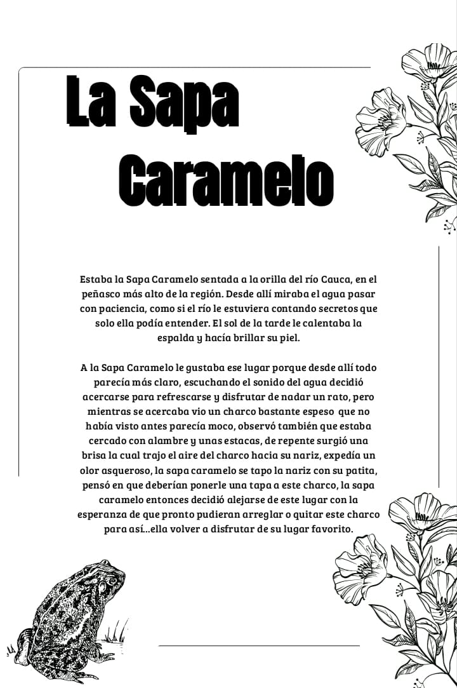
Act. 01ANÁLISIS: TIPOS DE COMUNICACIÓN
Evidencia 041. ¿Cuáles son los tipos de comunicación que asumen los seres humanos?
Según el análisis del video, los tipos de comunicación son:
- • Comunicación pasiva: La persona no expresa sus opiniones, evita el conflicto y cede ante los demás, reprimiendo sus sentimientos.
- • Comunicación agresiva: La persona impone su opinión de forma dominante, irrespetuosa o violenta, sin considerar los derechos de los demás.
- • Comunicación asertiva: La persona expresa sus ideas, sentimientos y necesidades de forma clara, directa y respetuosa, sin agredir ni someterse.
2. Diferencia entre comunicación agresiva y pasiva
| Comunicación Agresiva | Comunicación Pasiva |
|---|---|
| Impone su punto de vista | Evita expresar su punto de vista |
| Usa tono alto e intimidante | Usa tono sumiso o callado |
| No respeta derechos ajenos | No defiende sus propios derechos |
| Genera conflicto y tensión | Genera frustración interna |
3. Ejemplo de comunicación pasivo-agresiva
En el trabajo: Un compañero siempre llega tarde y deja las tareas sin hacer. En lugar de decirlo directamente, la persona afectada empieza a ignorarlo, hace comentarios indirectos como "qué bueno que algunos sí trabajamos" o sabotea sutilmente su trabajo. No confronta el problema directamente, pero expresa su molestia de forma indirecta y hostil.
4. ¿Qué características tiene la comunicación asertiva?
- ✓ Expresa opiniones con respeto
- ✓ Usa el "yo" para hablar
- ✓ Escucha activa
- ✓ Contacto visual seguro
- ✓ No agrede ni se somete
- ✓ Busca soluciones
- ✓ Reconoce derechos
- ✓ Equilibrio emocional
5. Análisis de Escenas (Video)
Escena 1 - El jefe y Bob (Los Increíbles): Comunicación Agresiva. El jefe lo amenaza, no lo escucha y lo despide sin darle oportunidad de explicarse.
Escena 2 - La mamá y el papá (Denis): Comunicación Pasiva. La mamá evita el conflicto, duda y no dice claramente lo que quiere.
Escena 3 - Rex el aguafiestas (Toy Story): Comunicación Agresiva. Los juguetes lo insultan y atacan llamándolo "aguafiestas" repetidamente.
Escena 5 - Colette defendiendo a Linguini (Ratatouille): Comunicación Asertiva. Habla con firmeza y respeto, defendiendo el punto de vista basado en hechos profesionales.
Funciones del lenguaje
Tema:Función Poetica
Act 03Presentación con diapositivas
COMUNICACIÓN NO VERBAL: VESTIMENTA Y PROTOCOLO
Act 041. Introducción
La comunicación no es solo lo que decimos con palabras. Muchas veces, sin darnos cuenta, transmitimos mensajes a través de cómo nos vemos, nuestros gestos, la postura o incluso la forma en que saludamos. Todo esto hace parte de lo que se conoce como comunicación no verbal, y es clave para entender cómo nos relacionamos con los demás en diferentes contextos.
En este trabajo voy a analizar la comunicación no verbal en el entorno social, enfocándome en la vestimenta, el protocolo y el saludo, tomando como referencia la película Dedushka (El Abuelo, 2016). Esta película muestra muy bien cómo, dentro de una familia rusa, estos elementos transmiten muchos significados sin necesidad de palabras.
2. Marco Teórico
2.1 La Comunicación No Verbal: Es todo lo que expresamos sin hablar o escribir. Incluye cosas como los gestos, las expresiones faciales, la mirada, el tono de voz y la apariencia física.
2.2 La Vestimenta: La ropa que usamos no solo sirve para cubrirnos, sino que es una de las señales más rápidas que los demás reciben de nosotros. Indica clase social, profesión y estado de ánimo.
2.3 El Protocolo y el Saludo: El protocolo son las reglas sociales que nos dicen cómo debemos comportarnos. El saludo es la primera forma de protocolo que usamos al encontrarnos con alguien.
3. Análisis de Escenas de la Película
Escena 1: El reencuentro de la familia
El saludo es muy tradicional. Los personajes jóvenes saludan al abuelo con una postura de respeto, demostrando que él es la autoridad y que la cultura familiar tiene reglas de comportamiento claras.
Escena 2: La cena familiar
La vestimenta de los adultos es formal pero cómoda, reflejando un estatus estable. El abuelo luce ordenado, mientras que la niña viste ropa sencilla que comunica su vulnerabilidad.
4. Conclusiones
La comunicación no verbal no es algo secundario, sino que muchas veces es el mensaje principal. La película demuestra que estos elementos son parte de la cultura y se entienden automáticamente.
REFERENCIAS BIBLIOGRÁFICAS
- Cestero, A. M. (1999). Comunicación no verbal y enseñanza de lenguas extranjeras. Arco Libros.
- Ekman, P., y Friesen, W. V. (1969). The repertoire of nonverbal behavior: Categories, origins, usage, and coding. Semiotica, 1(1), 49-98. https://doi.org/10.1515/semi.1969.1.1.49
- Knapp, M. L., y Hall, J. A. (2010). Nonverbal communication in human interaction (7.ª ed.). Wadsworth Cengage Learning.
- Leathers, D. G., y Eaves, M. H. (2008). Successful nonverbal communication: Principles and applications (4.ª ed.). Pearson Education.
- Mehrabian, A. (1971). Silent messages. Wadsworth.
- Ruiz, L., Chonishvili, S., e Ivanov, A. (Productores), e Ivanov, A. (Director). (2016). Dedushka [Película]. Rusia.
Evidencias: Juan Pablo
La sapa caramelo🐸
Act. 01ESTABA LA SAPA CARAMELO SENTADA EN LA ORILLA DEL RÍO CAUCA EN EL PEÑASCO MÁS ALTO DE LA REGIÓN. Miraba el agua pasar y soñaba con conocer otros lugares. De repente, vio una mariposa y le dijo. Hay un bosque muy bonito, con flores y muchos animales. Entonces la Sapa Caramelo decidió que algún día cruzaría el río para vivir una gran aventura llena de moco vio una burbuja verde flotando y pensó que parecía un moco mágico. una vieja estaca apareció brillando en la tierra, y una voz misteriosa le dijo que esa estaca la guiaría en su viaje al otro lado del río. la Sapa Caramelo hizo un nudo mágico en la cuerda. Antes de cruzar el río, la Sapa Caramelo encontró una tapa de madera flotando y decidió usarla Sabía que al otro lado la esperaba el bosque bonito del que hablaba la mariposa, así que respiró profundo y comenzó su gran aventura con una sonrisa en el corazón.
Funciones del lenguaje
Tema:Función Fatica
Act 03Presentación con diapositivas

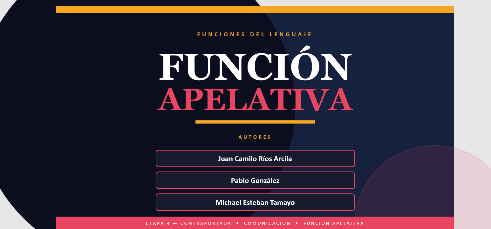
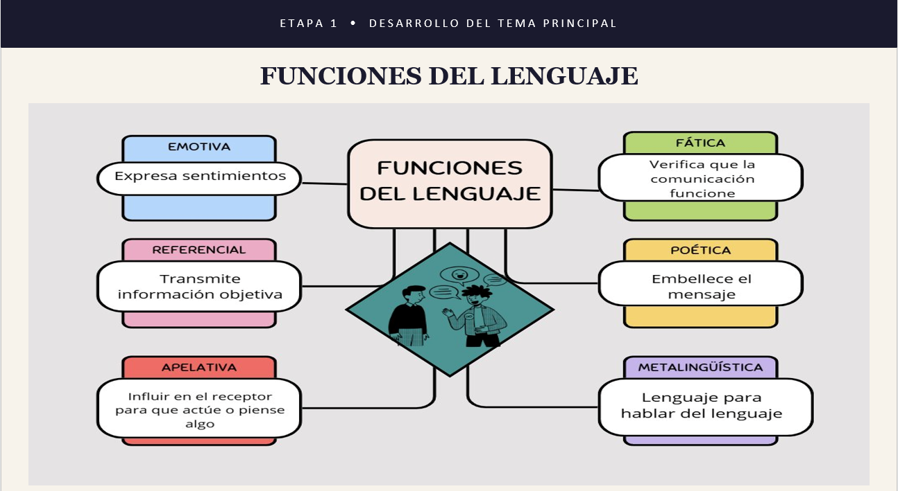
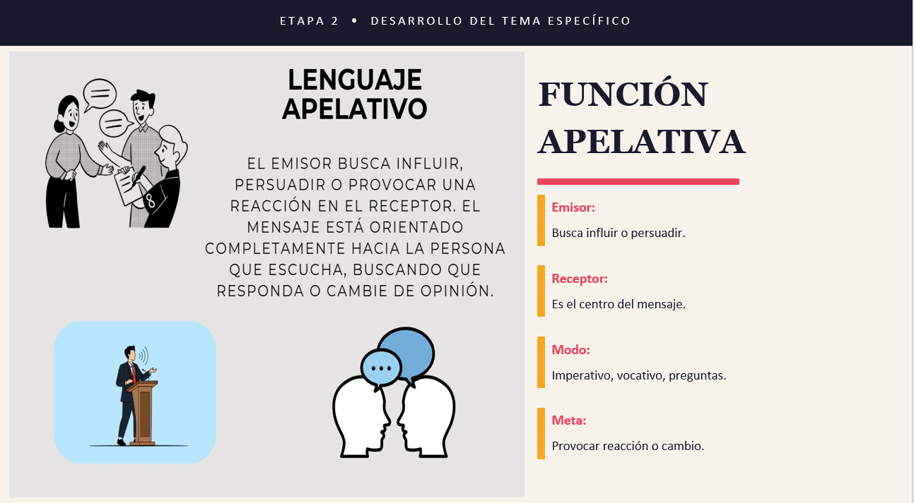
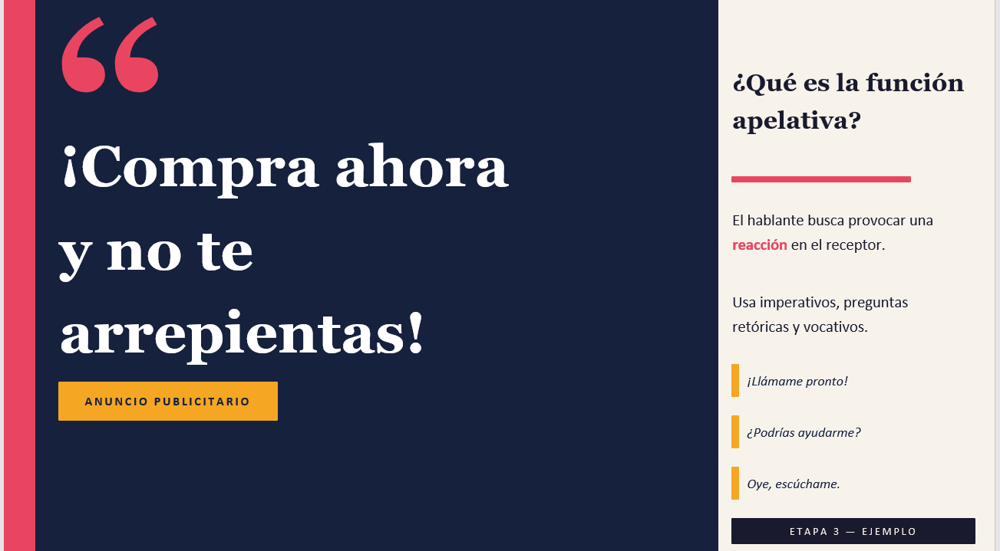
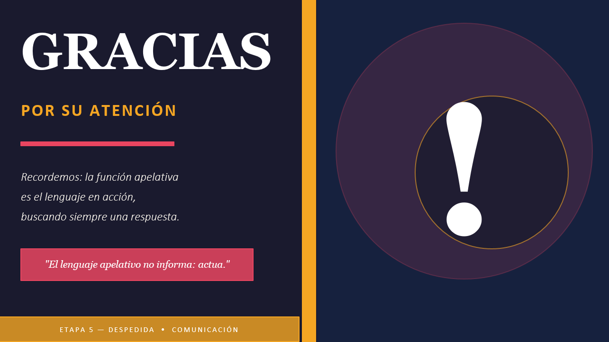